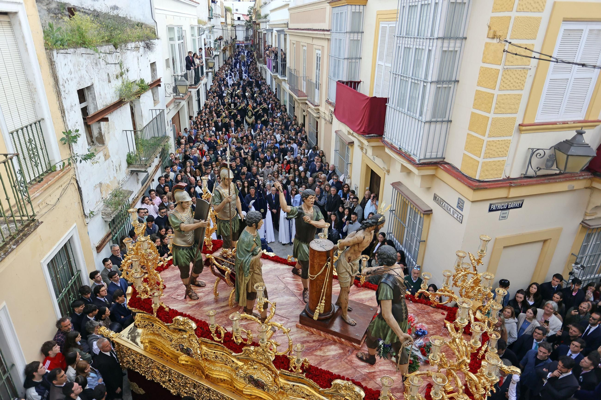
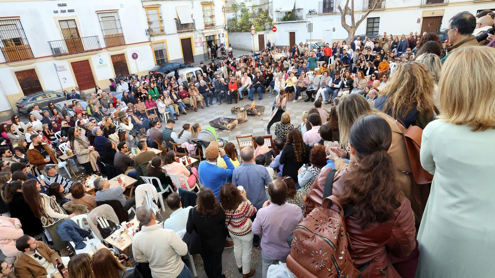

Tradiciones
Jerez de la Frontera es una ciudad donde las tradiciones forman parte esencial de la vida cotidiana. A lo largo del año, sus calles se llenan de celebraciones que combinan devoción, arte, música y convivencia. Estas costumbres reflejan la identidad jerezana y muestran la profunda relación de la ciudad con la cultura andaluza, el flamenco, el caballo y la gastronomía local. Cada fiesta tiene su propio carácter, pero todas comparten un espíritu abierto y participativo que atrae tanto a vecinos como a visitantes.
SEMANA SANTA
La Semana Santa de Jerez de la Frontera es una de las más destacadas de Andalucía, considerada por muchos como la segunda más relevante tras la de Sevilla por la calidad artística de sus pasos, la magnitud de sus cortejos y la enorme participación ciudadana. En la ciudad procesionan más de 40 hermandades, cada una con una larga historia vinculada a sus barrios y a las parroquias que las vieron nacer.
Durante la semana, miles de jerezanos salen a la calle acompañando a sus imágenes durante su recorrido por el casco histórico de la ciudad. El ambiente combina solemnidad, arte y tradición, convirtiendo esta celebración en uno de los momentos más esperados y vividos del año en Jerez.
FERIA DEL CABALLO
La Feria del Caballo, celebrada cada primavera en Jerez de la Frontera, es una de las fiestas más importantes de Andalucía. Su origen se remonta a las antiguas ferias ganaderas, donde se comerciaba con caballos y ganado. Hoy es una celebración que combina tradición, elegancia y ambiente festivo. En el recinto ferial del Parque González Hontoria, desfilan jinetes y amazonas, se realizan exhibiciones ecuestres y las casetas ofrecen música, gastronomía y baile. Es una fiesta muy característica por su luz, sus farolillos, los trajes de flamenca y su relación histórica con el mundo del caballo, símbolo de la identidad jerezana.

ZAMBOMBA
La Zambomba de Jerez es una celebración tradicional que tiene lugar durante el tiempo de Navidad y es una de las expresiones culturales más representativas de la ciudad. Su origen está en reuniones vecinales que se celebraban en patios y corrales, donde la gente cantaba villancicos acompañados por palmas, panderetas y la típica zambomba. Con el tiempo, estas reuniones se hicieron más grandes y se extendieron por peñas flamencas, tabancos y plazas.
Hoy en día, la Zambomba jerezana es una fiesta llena de convivencia, cante y compás, donde se mezclan villancicos tradicionales con toques flamencos. Ha sido reconocida como Bien de Interés Cultural, y cada año atrae a miles de personas que buscan vivir una Navidad auténtica y popular en Jerez.
